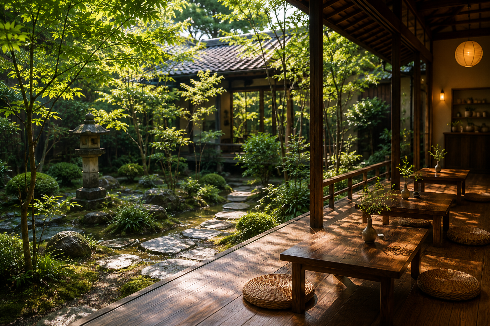
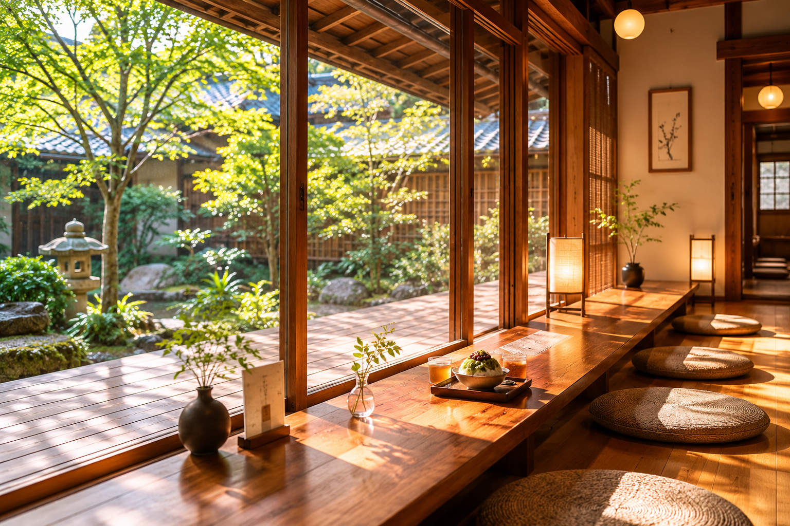
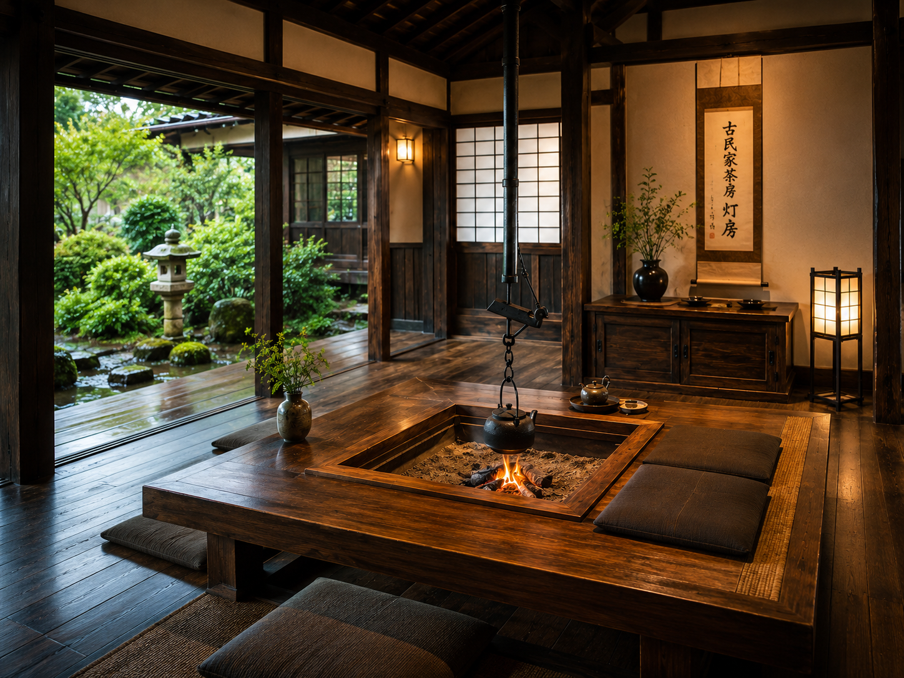
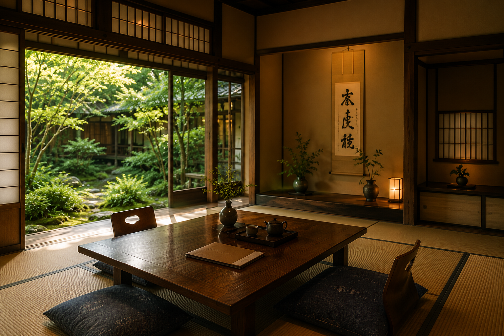
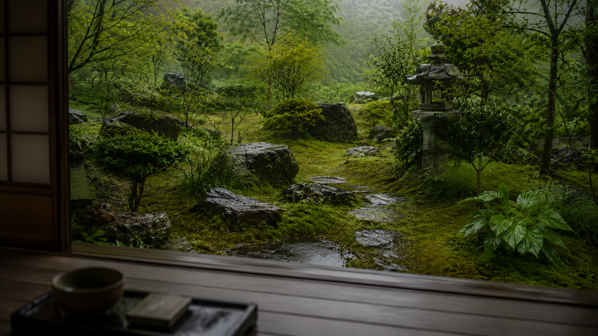
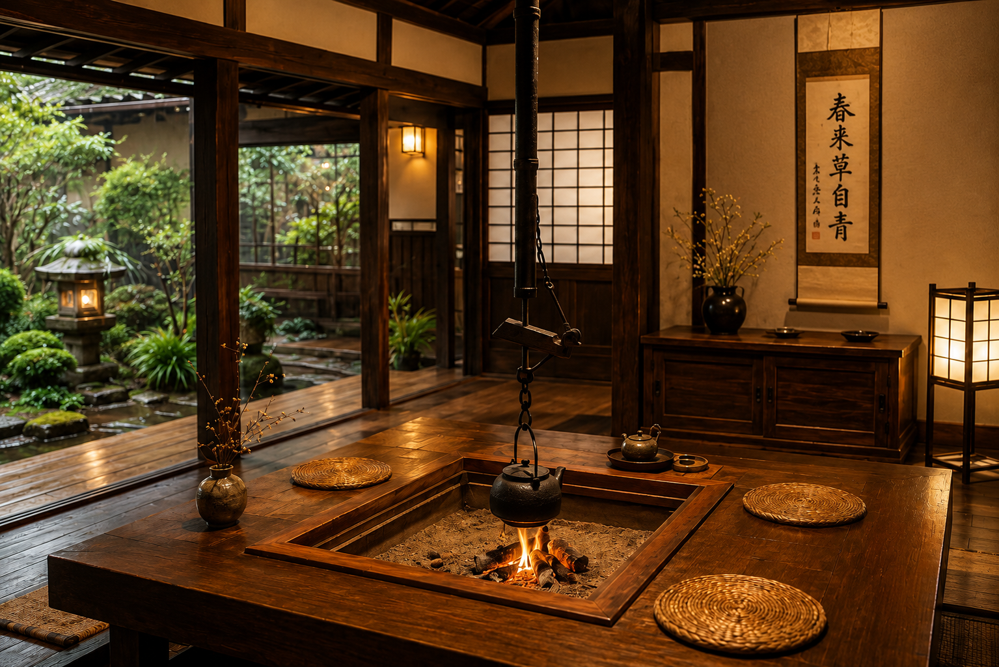

SPACE

其の一
庭Garden
苔や木々に囲まれた、灯庵の広い庭。 木漏れ日が差し込む朝、雨に潤う午後、夕暮れに静まりかえる時間。 季節ごとに表情を変える景色の中で、いちばん長く時を重ねる場所です。

其の二
縁側Engawa
庭をいちばん近くで感じられる、縁側の席。 足を伸ばしたまま、お茶と甘味をゆっくり味わえる、灯庵でも特に人気のある居場所です。 季節の風と光が、そのままごちそうになります。

其の三
囲炉裏の間Irori Room
灯庵を象徴する、囲炉裏のある和室。 黒く磨かれた柱、煤けた天井、ぬくもりの残る炉端。 古民家らしい趣をそのままに、抹茶やぜんざいを楽しめる、もっとも静かな空間です。

其の四
座敷Zashiki
畳の落ち着いた香りに包まれる、奥座敷。 障子越しに差し込むやわらかな光と、ふすまで仕切られた静けさ。 お連れ様とゆっくり話したい時にもおすすめの席です。
Gallery
空間の景色Glimpses of TOUAN
写真をクリックすると拡大してご覧いただけます。


- 席はすべて自由席です
- 混雑時は少しお待ちいただく場合がございます
- 庭の眺めはお席により異なります
- 静かにお過ごしいただける空間です